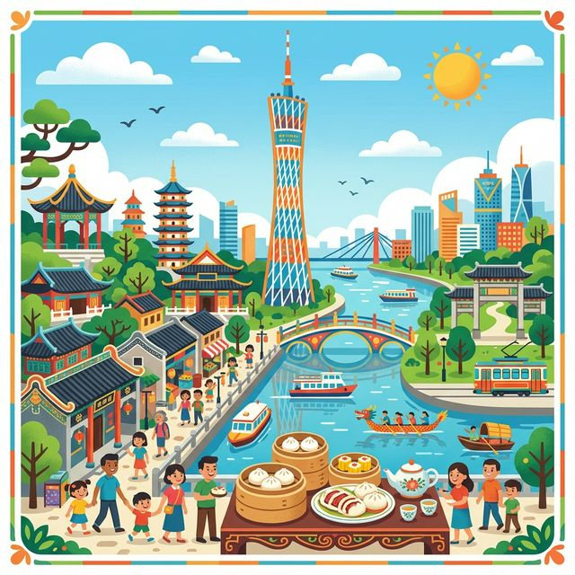
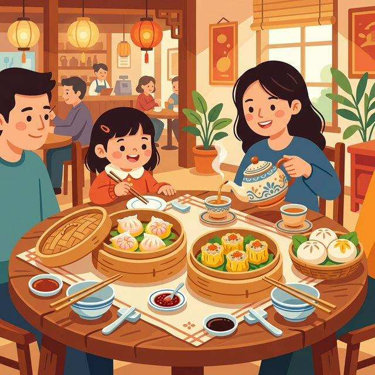

亲爱的小探险家，欢迎来到充满活力的“羊城”——广州！
这里有冲破云霄的广州塔，有历史悠久的骑楼老街，更有着数不尽的广东早茶点心！让我们去大吃一顿，大玩一场吧！
🗺️ 1. 核心知识点
🎒 2. 出发准备
📖 3. 趣味小故事
🔍 4. 观察记录表
广州地标建筑，是中国第一高塔！因为它中间非常细，就像少女纤细的腰，所以大家都亲切地叫它“小蛮腰”。
广州人最喜欢“喝早茶”。但他们不仅喝茶，重点是吃竹笼里装着的虾饺、烧卖、叉烧包等美味点心！
广州老街特有的建筑。二楼伸出来盖在人行道上，可以给走在下面的人遮风挡雨躲太阳哦！
广州的市花。春天开放时，红彤彤的花朵像一团团火焰，被人们称为“英雄花”。
在广州吃早茶时，别人给你倒茶，你要用手指在桌子上敲两下，这叫做“叩指礼”，是谢谢的意思哦！

很久以前，广州发生了饥荒。天上有五位神仙骑着五只口里衔着稻穗的羊降临广州，把稻穗送给了这里的人们，祝福他们永远不挨饿，然后神仙飞走了，五只羊化成了石头。所以广州又被称为“羊城”和“穗城”！越秀公园里那座五羊雕像就是记念这个传说的呢。
你去吃广式早茶了吗？这么多好吃的点心，你最喜欢哪一种？